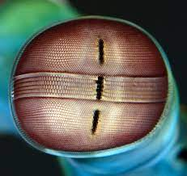

Fatos sobre o Stomatopoda
Stomatopoda, também conhecida como Lagosta Boxeadora, é uma ordem de crustáceos marinhos do reino Animmalia, do filo Anthropoda, do subsfilo Crustacea, da classe Malacostraca, da subcalsse Hoploclarida e da ordem Stomatopoda.
Seu nome científico é Odontodactylus scyllarus.
O animal pode ser encontrado em quase todo o litoral brasileiro, porém é difícil de ser observá-los devido a seus hábitos furtivos.

Uma visão melhor que a humana
O Stomatopoda possui uma das melhores visões, se não a melhor visão de todo o reino animal. Ele consegue interpretar polarização no espectro, enxergando cores ultravioleta e infraverleha, habilidade esta que nem os humanos possuem. Além disso, seus olhos se movem independentemente um do outro.
O soco mais potente do reino animal
O stomatapoda é capaz de realizar socos de até 720 kilômetros por hora! Tal potência é equivalente à de uma arma de calibre 22, e é suficiente para quebrar a carapaça de um carangueijo, conchas ou até vidro reforçado de um aquário.

Neste vídeo, pode-se ver o Stomatopoda em ação.